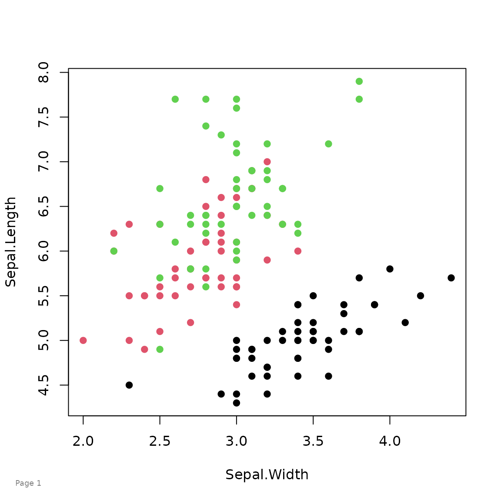
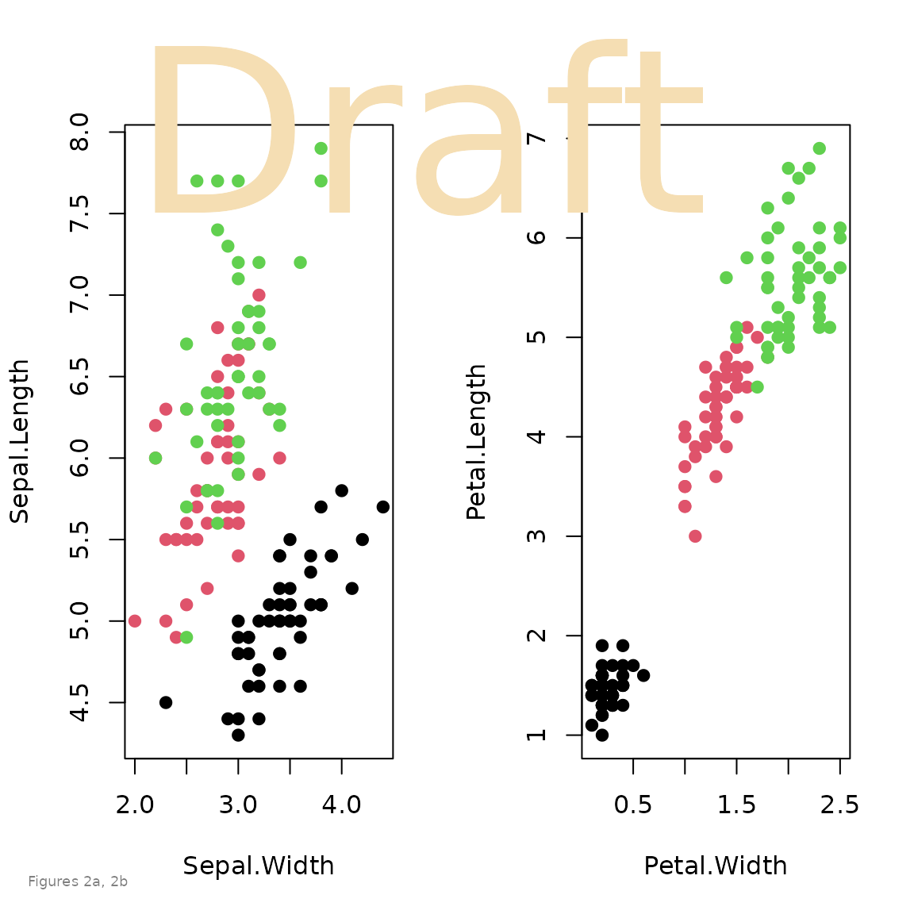
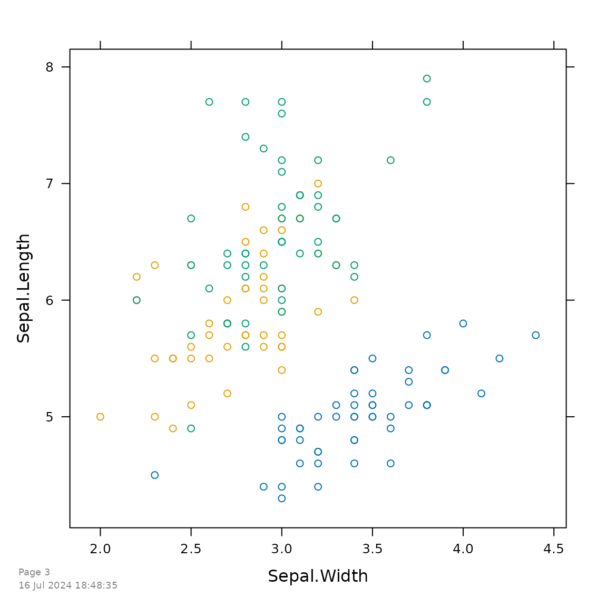
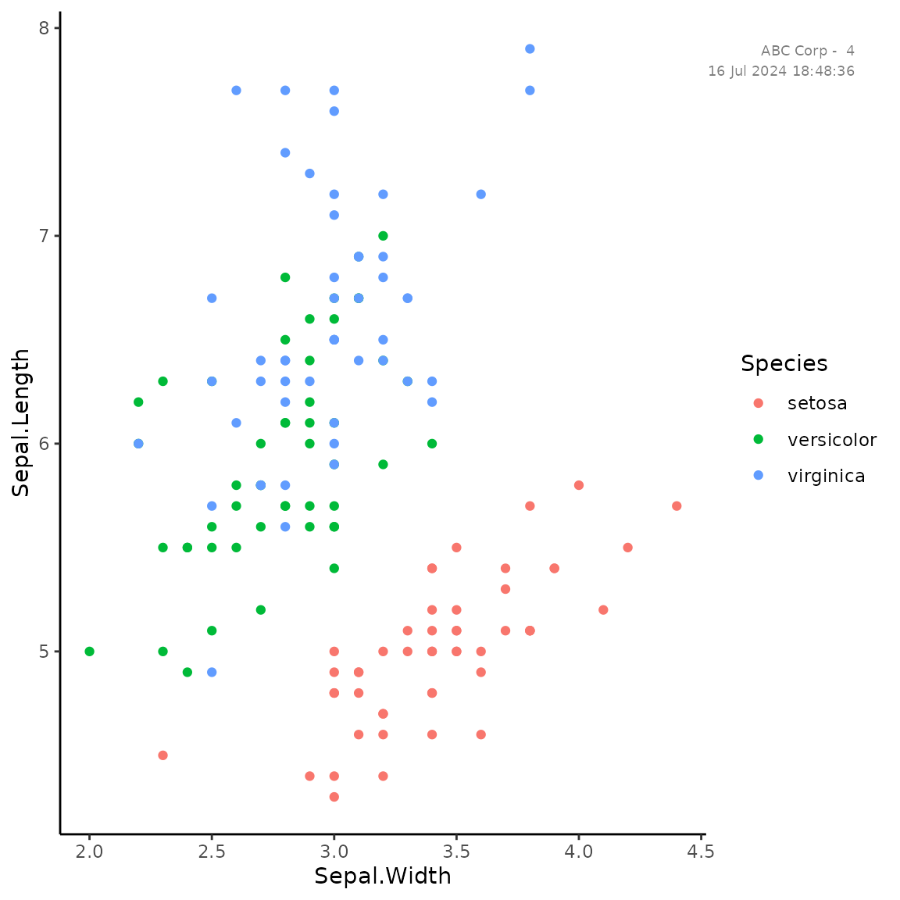

Using the pagenum package
Kevin Wright
2024-07-16
Source:vignettes/pagenum_examples.Rmd
pagenum_examples.RmdAbstract
Sometimes it can be useful to add a footnote number to graphics. This package makes it easy to automatically add a time-stamp and page number to graphics. The package can also be used to add general text anywhere on any type of graphics device (base/lattice/ggplot).
R setup
library("knitr")
knitr::opts_chunk$set(fig.align="center", fig.width=6, fig.height=6)
library("pagenum")Base graphics
First, set the starting page number to 1. Each call of the
pagenum() function will add the page number to the current
graphic and automatically increment the page number counter which is
stored in options().
setPagenum(1)
plot(Sepal.Length~Sepal.Width, data=iris, col=Species, pch=19)
pagenum()
If the argument num="" is used, then the page counter is
not automatically incremented.
Multiple figures with ‘Draft’ watermark
op = par(mfrow=c(1,2))
plot(Sepal.Length ~ Sepal.Width, data=iris, col=Species, pch=19)
plot(Petal.Length ~ Petal.Width, data=iris, col=Species, pch=19)
par(op)
pagenum(num="", text="Figures 2a, 2b")
pagenum(num="", text="Draft",
x=.5, y=.95, just=c('center','top'),
col="wheat", cex=3)
lattice with timestamp
setPagenum(getPagenum()+1) # Manual increment
library("lattice")
xyplot(Sepal.Length~Sepal.Width, data=iris, groups=Species)
pagenum(date=TRUE)
ggplot2 with stamp at top right
library("ggplot2")
ggplot(iris, aes(x=Sepal.Width, y=Sepal.Length,
color=Species)) + geom_point() + theme_classic()
pagenum(text="ABC Corp - ", date=TRUE,
x=.95, y=.95, just=c('right','top'))